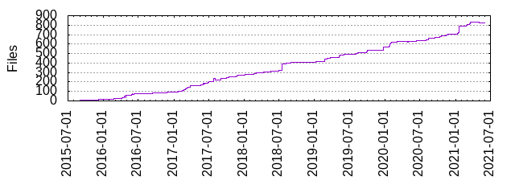

Files
- Total files
- 823
- Total lines
- 54721
- Average file size
- 2793.38 bytes

| Extension | Files (%) | Lines (%) | Lines/file |
|---|
| 167 (20.29%) | 6499 (11.88%) | 38 |
| bazel | 16 (1.94%) | 483 (0.88%) | 30 |
| buildkite | 1 (0.12%) | 1 (0.00%) | 1 |
| bzl | 96 (11.66%) | 8113 (14.83%) | 84 |
| c | 15 (1.82%) | 9307 (17.01%) | 620 |
| cc | 23 (2.79%) | 8403 (15.36%) | 365 |
| conf | 2 (0.24%) | 16 (0.03%) | 8 |
| dat | 4 (0.49%) | 442 (0.81%) | 110 |
| h | 28 (3.40%) | 5966 (10.90%) | 213 |
| jar | 14 (1.70%) | 1541 (2.82%) | 110 |
| java | 52 (6.32%) | 2518 (4.60%) | 48 |
| md | 25 (3.04%) | 2344 (4.28%) | 93 |
| patch | 2 (0.24%) | 62 (0.11%) | 31 |
| proto | 24 (2.92%) | 299 (0.55%) | 12 |
| py | 2 (0.24%) | 6 (0.01%) | 3 |
| repo | 1 (0.12%) | 7 (0.01%) | 7 |
| scala | 249 (30.26%) | 6355 (11.61%) | 25 |
| sh | 55 (6.68%) | 2745 (5.02%) | 49 |
| srcjar | 5 (0.61%) | 3 (0.01%) | 0 |
| template | 1 (0.12%) | 64 (0.12%) | 64 |
| thrift | 23 (2.79%) | 159 (0.29%) | 6 |
| txt | 16 (1.94%) | 722 (1.32%) | 45 |
| xml | 1 (0.12%) | 3 (0.01%) | 3 |
| yml | 1 (0.12%) | 112 (0.20%) | 112 |